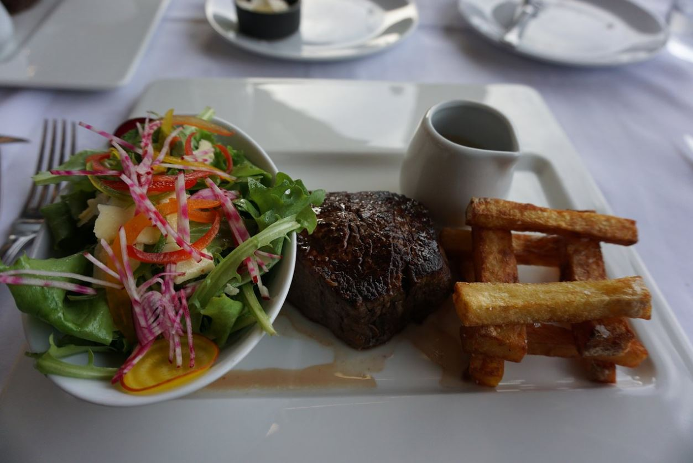
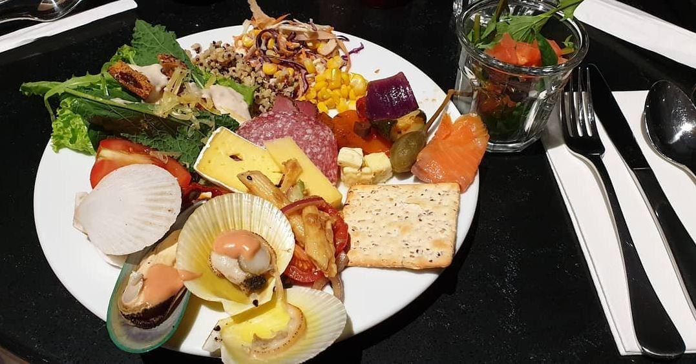
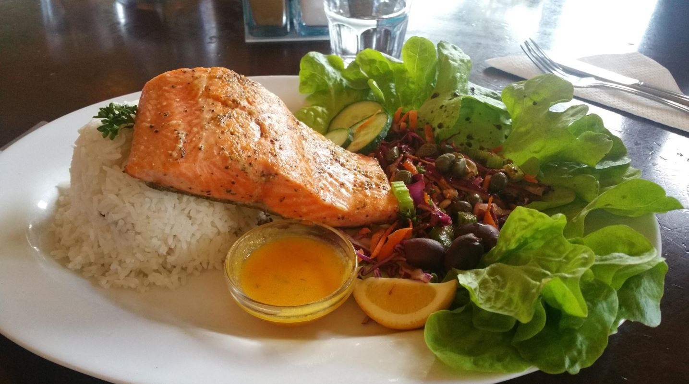

Places to eat
Some great accommodation options found right inside the Mount Cook Village.
The Panorama Restaurant

Cuisines and special diets: European, New Zealand, International, Gluten Free Options, Vegetarian Friendly
"The Hermitage hotel’s Panorama restaurant served main courses for somewhere between NZ$38-45. But if you’re like us and frugal, it can be an inexpensive and delightful a la carte evening meal. We ordered a seafood chowder entrée and a main course salmon with mashed polenta, BBQ corn with garlic and spinach, both dishes delicious and reasonably priced - because we shared. The not inexpensive food is just one aspect of the experience, because the view of surrounding Mountains from the huge windows as the sun goes down is priceless." ~ Reviewed By Steve S - Sydney, Australia
Book a reservation: +64 3-435 1809
The Alpine Restaurant
Cuisines and special diets: European, New Zealand, Vegetarian Friendly
"As this is the only place to get breakfast in the village we went here twice (the only other place doing breakfast opens at 10am, so way too late to go for a hike). The $30 charged for the full cooked buffet may be high, but to be honest, the variety and quality of things offered it sure worth it. Everything you'd expect to plus some surprises like litte raw bites. And always freshly filled up once empty. The room is quite big but luckily never very full when we visited. Having some busloads in there may make it little less appealing and surely very noisy. In comparison the Sir Edmund Hillary Cafe of the hotel, where we once popped it for some cake and coffee, offers the charme of a run down fast food outlet with average food and a rather dirty looking environment. Quite a contrast." ~ Reviewed By TouringCyclists - Berlin, Germany
Book a reservation: +64 800 686 800
Old Mountaineers' Cafe, Bar and Restaurant
Cuisines and special diets: Local cuisine, Cafe, European, New Zealand, Vegetarian Friendly
"At here twice during our 3-day stay. This small, historical restaurant is a short walk from the Hermitage and offers a good alternative to the hotel buffet and/or a la carte menu. It's setting feels private, with a large window offering views of the Mountains...MoreDelighted to hear that you enjoyed your time with us at our cosy, beloved place here. Thank you so very much for taking the time to write and let us know. You made our day. Travel safe." ~ Reviewed By travlbug - N Carolina USA
Book a reservation: +64 3-435 1890
